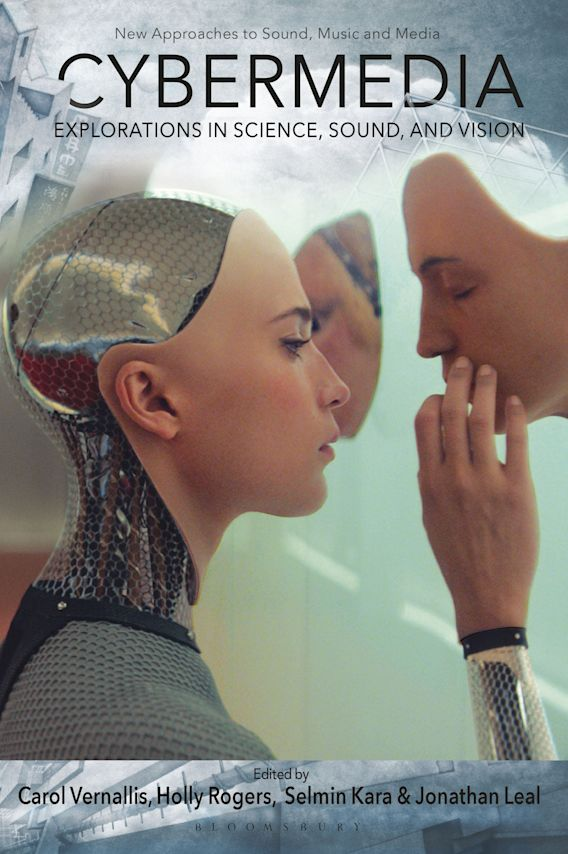
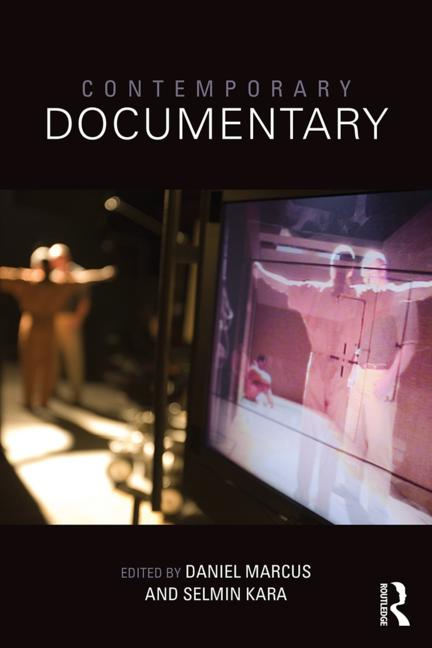
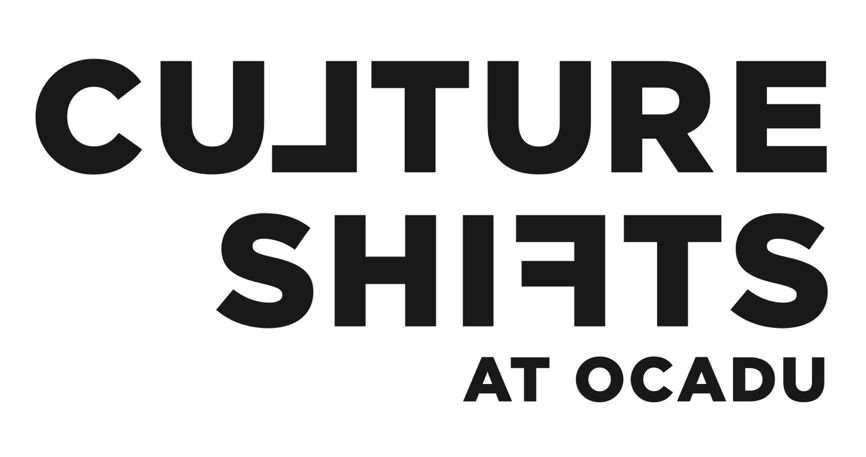
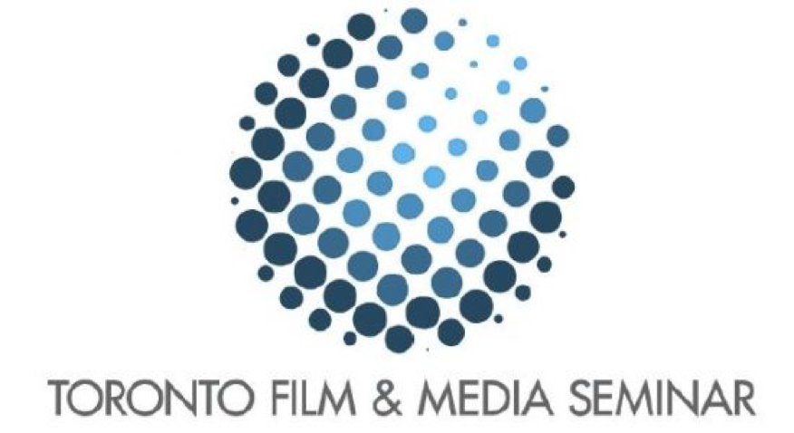

Selmin Kara
BiographyResearch
CV
Publications
Teaching
Students
Events
skara@faculty.ocadu.ca
Biography
Selmin Kara is an Associate Professor of Film and New Media Studies at OCAD University in Toronto. In addition to her appointment in the Faculty of Liberal Arts and Science, Dr. Kara is an affiliated faculty member of the graduate programs CADN (Contemporary Art, Design and New Media Art Histories) and Digital Futures.
Her primary research interests are digital aesthetics and ecological sensibilities in cinema as well as the use of sound and new technologies in contemporary documentary. She is the co-editor of Contemporary Documentary (2015) and the forthcoming Cybermedia: Explorations in Science, Sound, and Vision (2021). Her work has also appeared in Post-Cinema: Theorizing 21st Century Film, The Oxford Handbook of Sound and Image in Digital Media, Screen, Sequence, Music and Sound in Nonfiction Film, The Philosophy of Documentary, and Studies in Documentary Film.

Research
I. Eco-cinema
- [Forthcoming] Kara, Selmin. “Ethological Realism in Honeyland,” in Honeyland: A Docalogue. Ed. Jaimie Baron and Kristen Fuhs. New York: Taylor and Francis.
- 2020 Kara, Selmin. “The Anthropocene Project and the Archiviolithic Imaginary,” Screen, 61.2 (Summer): 315–321.
- 2020 Kara, Selmin, and Cydney Langill. “Weirding Climate Realism in Sunshine and Ex-Machina,” Resilience: A Journal of the Environmental Humanities, 7.2-3 (Spring-Fall): 60-81.
- 2016 Kara, Selmin. “Anthropocenema: Cinema in the Age of Mass Extinctions,” in Post-Cinema: Theorizing 21st-Century Film. Ed. Shane Denson and Julia Leyda. REFRAME: Open-Access and Multimedia Publishing in Media, Film and Music Studies: 750-785. (also online, April 2016).
II. Documentary and Sound
- [Forthcoming] Kara, Selmin. “Across the Sonorous Desert: The Audiovisual Ecology of Migration in El Mar La Mar,” in Cinema and Migration. Ed. Robert Burgoyne and Deniz Bayrakdar. Amsterdam: Amsterdam University Press.
-

2015 Marcus, Daniel, and Selmin Kara. Contemporary Documentary. New York: Taylor and Francis/Routledge. - 2014 Kara, Selmin, and Alanna Thain. “Sonic Ethnographies: Leviathan and New Materialisms in Documentary,” in Music and Sound in Documentary Film. Ed. Holly Rogers. New York: Taylor and Francis/Routledge: 180-192.
- 2013 Kara, Selmin. “The Sonic Summons: Meditations on Nature and Anempathetic Sound in Digital Documentaries,” in The Oxford Handbook of Sound and Image in Digital Media. Ed. John Richardson, Amy Herzog, and Carol Vernallis. Oxford: Oxford University Press: 582-598.
- 2009 Kara, Selmin. "Reassembling the Nation: Iraq in Fragments and the Acoustics of Occupation," Studies in Documentary Film (Issue on Documentary Films after 9/11), 3. 3 (September): 259-274.
III. Film-Philosophy
- 2016 Kara, Selmin. “Redefining Documentary Materialism: from Actuality to Virtuality in Victor Erice’s Dream of Light,” in The Philosophy of Documentary Film. Ed. David LaRocca. Lanham, MA: Lexington Books: 343-361.
- 2014 Kara, Selmin. “Beasts of the Digital Wild: Primordigital Cinema and the Question of Origins,” Sequence: Serial Studies of Media, Film and Music 1. 4 (Online, Summer).
- 2008 Kara, Selmin, and Carole Piechota. “The Perpetual Bachelorette: Seduction and Simulation in Michel Gondry’s Bjork Videos,” POIESIS: A Journal of the Arts & Communication (Issue on Jean Baudrillard) 10: 58-68.
IV. Media Art Activism
- 2015 Kara, Selmin, and Camilla Møhring Reestorff. “Unruly Documentary Artivism,” Studies in Documentary Film 9.1 (February).
- 2015 Kara, Selmin. “Rebels Without Regret: Documentary Artivism in the Digital Age,” Studies in Documentary Film, 9.1 (February): 42-54.
- 2015 Møhring Reestorff, Camilla, and Selmin Kara. “Introduction: Unruly Documentary Artivism,” co-authored with Camilla Møhring Reestorff, Studies in Documentary Film, 9.1 (February): 1-9.
V. Unrefereed Research
- 2018 Kara, Selmin. “Chasing Mass Extinctions”: Guest writer for the scholarly documentary site Docalogue’s discussion on the film Chasing Ice (January 2018): https://docalogue.com/january-chasing-coral/
- 2018 [Reprint] Kara, Selmin. “Reassembling the Nation: Iraq in Fragments and the Acoustics of Occupation,” in Ten Years of Studies in Documentary Film. Ed. Deane Williams. New York: Taylor and Francis/Routledge.
- 2016 Kara, Selmin. “Dijital Diyarın Canavarları: Dijital Sinemada Gerçekçilik ve Kökenlere Dönüş,” Tr. Ilker Mutlu. Sekans Sinema Kulturu Dergisi 11 (Sekans Cinema Culture Reader 11). http://openresearch.ocadu.ca/id/eprint/1272/1/Kara_Dijital_2016.pdf
CV
Areas of Specialization
Contemporary documentary practices and theory; digital media and post-cinema; eco-cinema and eco-media studies; climate change and the Anthropocene; sound studies; migration studies; Turkish national and transnational cinemas; film philosophy; media art activism
Employment
2011–Present
Associate Professor of Film and New Media, Faculty of Liberal Arts and Sciences and the School of Interdisciplinary Studies, OCAD University, Canada
2004–2011
Graduate Teaching Assistant, Wayne State University, USA
August 2007
Global Teaching Fellow, Universidade Federal de Minas Gerais, Brazil
June–August 2007
Summer Intern, The United Nations Headquarters, Disarmament and Peace Affairs Branch, New York
2003–2004
Graduate Research Assistant, Wayne State University, USA
1999–2003
Assistant Producer, Ajans 21 Documentary Production Agency, Turkey
Education
2003–2011
Ph.D. in Film and Media Studies, Wayne State University, Detroit, MI/USA
2010
Certificate in "Digital Discourse: Theory, Art, Archive," Cornell University, Ithaca, NY/USA
2000–2003
MA in Radio, Television, and Film. Marmara University, Istanbul/Turkey
1995–1999
BA in Translation Studies, Boğaziçi University, Istanbul/Turkey
Grants, Fellowships, and Awards
2020
OCAD University Faculty of Liberal Arts & Sciences and School of Interdisciplinary Studies Teaching Award (Nominated)
2020
Co-applicant in the SSHRC Connection Grant awarded to “Film-Philosophy Conference 2020: North America and Beyond”, directed by Mark Cauchi
2018
OCAD University Seed Grant
2017–2018
Massey Visiting Scholar
2015
Co-applicant in the SSHRC Connection Grant awarded to workshop “Affective Encounters”, directed by Dr. Alanna Thain and held in Montreal, (August 14-17),
2015
OCAD University Award for Excellence in Early Stage Research, Scholarship & Creative Activity
2010 & 2006
Thomas C. Rumble Competitive Graduate Fellowship, Wayne State University (awarded twice)
2010
The Graduate School Summer Dissertation Fellowship, Wayne State University
2009
The Dennis Turner Memorial Scholarship in Film Studies, Wayne State University
2007
English Department Global Teaching Fellowship, Wayne State University
Presentations and Academic Talks
I. Conference Papers (refereed)
2020
[Accepted but conference postponed due to the coronavirus pandemic] “Petrifying Animals: Media Ethology in the Anthropocene,” European Network for Cinema and Media Studies (NECS) Conference, Palermo, Italy.
2019
"Cine-forming Life," Biannual conference of the Association for the Study of Literature and Environment (ASLE), California, Davis.
2019
"The Anthropocene Project and the Archiviolithic Imaginary," 3rd Interdisciplinary Ecological-Ethical Encounters, Istanbul, Turkey.
2018
“Weird Life and the Cinematic Anthropocene,” 32nd Annual Conference of Society for Literature, Science, and the Arts (SLSA), Toronto.
2018
“Post-cinema, Future Cities, and Ecological Design,” Ontario Climate Consortium, Toronto.
2018
“World Upside Down: Transmediating the Anthropocene,” Society for Cinema and Media Studies (SCMS) Conference, Toronto.
2017
“Ditch Plains and the Post-Cinematic Documentary,” Visible Evidence XXIV, Buenos Aires.
2016
“The Anthropocene Breach,” Society for Cinema and Media Studies (SCMS) Conference, Atlanta, USA.
2015
“Dreams of Light: Documentary, Matter, Memory,” Visible Evidence XXII. University of Toronto and York University, Toronto.
2015
“Post-Cinematic Wastelands and the Anthropocene Imaginary,” SCMS Conference, Montreal, Canada.
2014
“Feminist Anthropocenema,” The Center for 21st Century Studies' Conference on Anthropocene Feminism, University of Wisconsin-Milwaukee, Milwaukee.
2014
“Hooligan Media: Istanbul Gezi Protests and Contagious Archives,” SCMS Conference. Seattle, WA.
2013
“Turkish Gezi Protests and Documentary Artivism,” BRAFFTV Film and Media International Conference, Conference Theme: Film, Media, and Social Engagement in the Digital Age, University of Toronto.
2013
“Never Sorry: An Apology for Documentary Artivism,” Visible Evidence XX, Stockholm University, Sweden.
2013
“Beasts of the Digital Wild: Cinema and the Question of Origins,” SCMS Conference, Chicago, IL.
2012
“From the Kinoki to the Crowd: Crowd-Sourced Documentaries and the Spectatorial Vision,” SCMS Conference, Boston, MA.
2011
“Duration and Agency in Digital Long-Take Documentaries,” Duration (Before and) After Media Conference, OCAD University, Toronto, ON.
2011
“The Sonic Summons: Meditations on Nature and Anempathetic Sound in Digital Documentaries,” SCMS Conference, New Orleans, LA.
2010
“Parables for Documentary: Lessons, Lemmata, and the Limits of Representation in Lessons of Darkness and Wittgenstein Tractatus,” Visible Evidence XVII, Bogazici University, Istanbul, Turkey.
2009
“A Delay in Advance: Anticipation and Virtuality in Videograms of a Revolution,” Visible Evidence XVI, USC School of Cinematic Arts, LA, California.
2008
"Reassembling Iraq: Iraq in Fragments and the Acoustics of Occupation," The 17th International Screen Studies Conference, Glasgow, UK.
2008
“21st Century Assemblages: World News Documentary and Nomadic Media,” The Sixth Annual Meeting of the Cultural Studies Association (CSA), New York, NY.
2007
“The Perpetual Bachelorette: Seduction and Simulation in Michel Gondry’s Bjork Videos,” co-authored and co-presented with Carole Lyn Piechota, Music and the Moving Image Conference, New York University, New York.
2007
“War Zones and the Cultural Logic of Globalization in Middle East Documentaries,” SCMS Conference, Chicago, IL.
2006
“Hotelfilm, Intimacy, and Transnational Cinema,” The 6th International Conference of Crossroads in Cultural Studies, Istanbul, Turkey.
II. Chaired Panels (refereed)
2015
“Cinema in/of the Anthropocene,” SCMS Conference, Montreal, Canada, March 2015.
2014
Co-Chair, “Documentary, Data, and Contagious Archives,” SCMS Conference. Seattle, WA.
2013
Co-Chair, “Documentary Artivism Unbound,” Visible Evidence XX, Stockholm University, Sweden, August 2013.
2012
“Primordigital Cinema,” SCMS Conference, Chicago, IL.
2011
Co-chair, “On the Margins of Documentary: Divergent Practices in the Digital Era,” SCMS Conference, New Orleans, LA.
2010
“Documentary Assemblages from Actuality to Virtuality,” Visible Evidence XVII, Bogazici University, Istanbul, Turkey, 2010.
III. Workshop Presentations
2018
Co-organizer, “Frugal Futures: Reimagining Sustainable Food Systems,” Ontario Climate Consortium, Toronto.
2015
“Women Alone at Night: Under the Skin of Cinema.” SSHRC funded “Affective Encounters” workshop, McGill University, Montreal.
Academic and Professional Activities
I. Conference, Colloquia, and Event Organization
2020
Organizing Committee Member, 2020 Film-Philosophy Conference, Toronto [postponed due to the coronavirus pandemic]
January 2020
Convener and Co-Chair for panel on “Critical Film and Media Pedagogies,” Toronto Film and Media Seminar in collaboration with TIFF Learning Studios.
March 2019
Convener and Chair for panel on “New Directions in African Cinema and Media,” Toronto Film and Media Seminar in collaboration with TIFF Learning Studios.
March 16, 2018
Co-organizer, “Mediated Belongings: Indigenous Film and Environmental Justice,” SCMS Conference affiliate event, Toronto.
2018
Programming Committee Member, Visible Evidence Conference.
2016–Present
Organizing Committee Member, Culture Shifts Documentary Series, OCAD University.
2014–Present
Organizational Committee Member, Toronto Film and Media Seminar, in collaboration with TIFF Learning Center.
2013–2016
Organizer and Co-Chair, ProprioMedia Colloquium Series in Media Studies and Research, OCAD University.
March 4, 2016
Moderator for panel on “Sensory Ethnography,” Toronto Film and Media Seminar in collaboration with TIFF Learning Center.
September 26, 2015
Moderator, Performance by Roewan Crowe, Feminist Art Conference.
April 14, 2015
Master of Ceremony, FITC Toronto (Annual meeting of the Technology and Creativity Conference).
March 6, 2015
Moderator for panel on “Film and Nation,” Toronto Film and Media Seminar in collaboration with TIFF Learning Center.
2010
Assistant Conference Coordinator, Visible Evidence.
II. Curatorial work
2017–2018
Curator, Visible Evidence official website “documentary events” page.
III. List-serv Moderation
2014–2015
Co-Moderator, --empyre-- soft skinned space, a list-serv for digital media arts and culture, hosted by Cornell University.
June 2015
Moderator for month-long discussion (with Patrick Keilty and Natasha Myers), “Plant Art and New Media,” --empyre—soft skinned space.
November 2013
Moderator for month-long discussion (with Patrick Keilty and Camilla Møhring Reestorff), “Documenting Digital Artivism,” --empyre-- soft skinned space.
Creative Activities (Documentary Film Production)
2002
Assistant Editing Director, Entre Chien et Loup (180’) dir. Cem Madra, France and Turkey.
2001
Production Assistant, Damming the Euphrates (35’) dir. Paxton Winters, Turkey.
2001
Editor, Is Anybody There? (5’30) dir. Togay Senalp, Turkey.
2001
Assistant Producer, In Pursuit of Lost Time (48’) dir. Özcan Arca, Turkey, award for “Best Film on Excavations” at the 7th Icronos Archaeological Film Festival of Bordeaux (France).
2000
Assistant Producer, Meeting (52’) directed by Szymon Zaleski, Turkey.
Languages
- English (fluent)
- Turkish (native)
Publications
Books
In Progress
Kara, Selmin. Stranded States: Cinema in/of the Anthropocene.
Anthologies and Edited Volumes
In Progress
Vernallis, Carol, Selmin Kara and Holly Rogers. Sound, Image, and Data in Cybermedia, under contract by Bloomsbury Publishing.
2015
Kara, Selmin, and Daniel Marcus. Contemporary Documentary. New York: Taylor and Francis/Routledge.
Edited Journal Issues
2015
Kara, Selmin, and Camilla Møhring Reestorff. “Unruly Documentary Artivism,” Studies in Documentary Film 9.1 (February).
Articles in Refereed Journals
Forthcoming
Vernallis, Carol, Selmin Kara and Holly Rogers. Sound, Image, and Data in Cybermedia, under contract by Bloomsbury Publishing.
2015
Kara, Selmin, and Cydney Langill. “Weirding Climate Realism in Sunshine and Ex-Machina,” special theme issue of Resilience: A Journal of the Environmental Humanities 7.1 on “Climate Realism.”
2020
Kara, Selmin. “The Anthropocene Project and the Archiviolithic Imaginary,” Screen, 61.2 (Summer 2020): 315–321.
2015
Kara, Selmin. “Rebels Without Regret: Documentary Artivism in the Digital Age,” Studies in Documentary Film, 9.1 (February): 42-54.
2015
Møhring Reestorff, Camilla, and Selmin Kara. “Introduction: Unruly Documentary Artivism,” co-authored with Camilla Møhring Reestorff, Studies in Documentary Film, 9.1 (February): 1-9.
2014
Kara, Selmin. “Beasts of the Digital Wild: Primordigital Cinema and the Question of Origins,” Sequence: Serial Studies of Media, Film and Music 1. 4 (Online, Summer).
2009
Kara, Selmin. "Reassembling the Nation: Iraq in Fragments and the Acoustics of Occupation," Studies in Documentary Film (Issue on Documentary Films after 9/11), 3. 3 (September): 259-274.
2008
Kara, Selmin, and Carole Piechota. “The Perpetual Bachelorette: Seduction and Simulation in Michel Gondry’s Bjork Videos,” POIESIS: A Journal of the Arts & Communication (Issue on Jean Baudrillard) 10: 58-68.
Book Chapters
Invited
Kara, Selmin. “Across the Sonorous Desert: The Audiovisual Ecology of Migration in El Mar La Mar,” in Cinema and Migration. Ed. Robert Burgoyne and Deniz Bayrakdar.
2016
Kara, Selmin. “Redefining Documentary Materialism: from Actuality to Virtuality in Victor Erice’s Dream of Light,” in The Philosophy of Documentary Film. Ed. David LaRocca. Lanham, MA: Lexington Books: 343-361.
2016
Kara, Selmin. “Anthropocenema: Cinema in the Age of Mass Extinctions,” in Post-Cinema: Theorizing 21st-Century Film. Ed. Shane Denson and Julia Leyda. REFRAME: Open-Access and Multimedia Publishing in Media, Film and Music Studies: 750-785. (also online, April 2016).
2014
Kara, Selmin, and Alanna Thain. “Sonic Ethnographies: Leviathan and New Materialisms in Documentary,” in Music and Sound in Documentary Film. Ed. Holly Rogers. New York: Taylor and Francis/Routledge: 180-192.
2013
Kara, Selmin. “The Sonic Summons: Meditations on Nature and Anempathetic Sound in Digital Documentaries,” in The Oxford Handbook of Sound and Image in Digital Media. Ed. John Richardson, Amy Herzog, and Carol Vernallis. Oxford: Oxford University Press: 582-598.
Book Review
2014
Kara, Selmin. “Review: Carnal Knowledge: Towards a 'New Materialism' through the Arts,” Humanities and Technology Review 33 (Fall): 146-154.
Unrefereed Publications
2018
Kara, Selmin. “Chasing Mass Extinctions”: Guest writer for the scholarly documentary site Docalogue’s discussion on the film Chasing Ice (January 2018): https://docalogue.com/january-chasing-coral
2018 [Reprint]
Kara, Selmin. “Reassembling the Nation: Iraq in Fragments and the Acoustics of Occupation,” in Ten Years of Studies in Documentary Film. Ed. Deane Williams. New York: Taylor and Francis/Routledge.
2016
Kara, Selmin. “Dijital Diyarın Canavarları: Dijital Sinemada Gerçekçilik ve Kökenlere Dönüş,” Tr. Ilker Mutlu. Sekans Sinema Kulturu Dergisi 11 (Sekans Cinema Culture Reader 11).
2010
Kara, Selmin. “Reflections on SCT 2010,” In Theory: Newsletter of the School of Criticism and Theory, Cornell University (Fall).
Translations
2001
[Co-translator] Modernity and Multiculturalism. Istanbul: Iletisim Yayinlari.
Dissertation
2011
“Reassembling Documentary: From Actuality to Virtuality.” Dissertation Committee: Richard Grusin (University of Wisconsin–Milwaukee), Steven Shaviro (Wayne State University), Robert Burgoyne (University of St Andrews), Carol Vernallis (Stanford University).
Teaching
OCAD University, 2011–Present
Undergraduate Courses:
- VISM 2001—Introduction to Film Studies
- VISM 3B03—Animation: Critical Perspectives
- VISM 3B43—Into the 21st Century: Photographic Practices, Theory, and Criticism
- VISM 4B03—Contemporary Documentary Media
- VISM 4B94—New Waves in Turkish Cinema
- VISM 4B05—Future Cinema: Digital Narratives
- VISM 4B91—Special Topic in Visual Culture-Media: “Anime: Dreams and Machines”
Graduate Courses/Seminars:
- VISM 6006 Screens and Digital Imagery
- VISM 6003 Issues in New Media Art: “Ecological Perspectives in New Media”
- VISM 6B03 New Technologies, New Critical Perspectives
- DIGF 6017 Discovery: Transmedia Storytelling
Students
Graduate Student Supervision:
-
Current:
-
Completed (Principal Advisor):
- Shahrzad Amin, Principal Advisor, Untitled MFA project, OCAD University
- Émilie Uzoma Jacob, MA MRP (Major Research Paper) in Contemporary Art, Design and New Media Art Histories: “Concrete Maternality: Late Capitalism and High-Rise Horror,” OCAD 2017
- Cydney Patricia Seck Langill, MA Thesis in Contemporary Art, Design and New Media Art Histories: “Embodiment and the Digital Continuum: Post-Cinematic Diffractions in Ex Machina, Her, and Under the Skin,” OCAD 2016
- Treva Michelle Pullen-Legassi, MA Thesis in Criticism and Curatorial Practice: “Whimsical Bodies: Agency and Playfulness in Robotic Art,” OCAD 2016
- Michael Klaus Trommer, MFA MRP in Interdisciplinary Master’s in Art, Media and Design: “Situating Cinematic Space within an Acoustemological Framework,” OCAD 2015
- Maziar Ghaderi, MDes MRP in Digital Futures: “Playformance: The Virtual Amplification of Spontaneous Hand Gestures in Performance Art,” OCAD 2014
- Ali Bassidji, MA MRP in Contemporary Art, Design and New Media Art Histories: “A.N.T., Agency and Cinematic Authorship,” OCAD 2014
-
Completed (Committee Member):
- Valentyna Onisko, MFA Thesis in Criticism and Curatorial Practice: “There is Bread and Salt Between Us: Negotiating Subjecthood Through Gestures of Hospitality,” OCAD 2017
- Margarita Beatriz Castro, MDes MRP in Digital Futures: “Augmented Reality Technologies for the Adaptation of Ecuadorian Intangible Cultural Heritage,” OCAD 2017
- Juan Francisco Bonilla, MFA MRP in Interdisciplinary Master’s in Art, Media and Design: “A Home Movie: Reluctant Autoethnography,” OCAD 2017
- Alana Marie Traficante, MFA Thesis in Interdisciplinary Master’s in Art, Media and Design: “Sensing the Image: Embodied Art Criticism,” OCAD 2016
- Completed (Internal Examiner):
- Monica Virtue, MRP in Digital Futures: “The Ipperwash Beach Walk,” OCAD 2016
- Umar Amanullah, MRP in Digital Futures: “#stopislamophobia: The Politics of Representation, Disidentification and Resistance,” OCAD 2015
- Faraz Anoushah Pour, MRP in Interdisciplinary Master’s in Art, Media and Design: “In the Space of a Day,” OCAD 2014
-
Completed (External Examiner):
- Aaron Pellerin, PhD Dissertation in Film Studies: “Everyday Transcendence: Contemporary Art Film and the Return to Right Now,” Wayne State University 2019
- Deniz Zorlu, PhD Dissertation in Cultural Studies: “Constructing Magnificence and Its Discontents: Analysis of the Series Magnificent Century,” Queens University 2017
Sample student work:
- “Transmissions from the Technological Sublime” A video completed as part of Michael Trommer’s MFA project. Intended as a large-scale, panoramic audio-visual installation. Sound is disseminated via 6 regular channels (hexagonal array) + 1 subwoofer (center/front). Original video is 5760 x 1080 dpi, to be projected via 3 synchronized HD projectors.
- “Whimsical Bodies and Performative Machines: Aesthetics and Affects of Robotic Art” A peer-reviewed article authored by Treva Pullen, based on ongoing research from her master’s thesis.
- “Dissolving Self: Wearable Technology + Contemporary Dance” A playformance piece that is part of Maziar Ghaderi’s Masters in Design research, Playformance. “Dissolving Self” employs metaphoric data visualization, motion capture and wearable technology to harness the subtle movements of a contemporary dancer. A gyroscope and a radio module (Xbee) worn by the dancer measure and transmit speed of rotation and a Microsoft Kinect captures lateral movement. These two sets of live data are fed into Processing, an open source software to create a responsive and metaphoric visualization that is projected over the dancer.
- “Jadoo Banoo: Leap Motion X Poetry” A customized networked-performance that is part of Maziar Ghaderi’s Masters in Design research, Playformance. Ghaderi animated and projected the words of Jadoo Banoo’s poem on and across the stage. The disorderly path of the words was formed by the hand gestures captured over the Leap Motion and the font size was determined by the speed of the gestures. Jadoo Banoo uses the performer’s spontaneous movements as embodied acts of articulation to translate spoken poetry and explores how the performer spatially interacts with and within the virtual representation of her own poetic text.
Events
Invited talks and public presentations:
- [Panelist] “Sonic Ethnography and the Ecotones of Dread,” The Penn Program in Environmental Humanities Symposium on “Geosocial Encounters: Ecologies of Documentary Research and Practice,” University of Pennsylvania, Philadelphia, September 20, 2019
- [Guest presenter], “Close-Up,” Post-Revolution Iran Film Series, Noor Cultural Center, Toronto, July 27, 2019
- [Guest speaker] “Film Screening and Panel: The Martian,” Science Literacy Week at the University of Toronto, Robarts Library, September 19, 2018
- [Keynote speaker] “Anthropocene Cinema and Future Ecologies,” Future Ecologies: Speculative Form and Feeling, one day event organized by the Institute for Gender, Sexuality, and Feminist Studies, McGill University, February 23, 2018
- [Invited speaker] Discussion #3 on the Exhibition “For All by All” curated by Agata Jaworska (The Dutch Pavilion), Thijs van Spaandonk and Gerjan Streng (BRIGHT Cloud Collective), Jorn Konijn (This Must Be The Place) and Saskia van Stein (Bureau Europa), EDIT: Festival for Design, Innovation, and Technology, Toronto, October 8, 2017
- [Invited panelist] “Isaac Julien: Rethinking Space,” OCAD University in collaboration with Royal Ontario Museum (ROM) and Images Festival (IF), April 6, 2017
- [Invited panelist] “Visualizing Decay,” Speaker series titled “(De)Composing Futures” organized by the Technoscience Salon, University of Toronto, January 13, 2017
- [Keynote speaker] “Documenting the Post-Cinematic Present,” DokFest Forum 2016, Kassel, Germany, November 17, 2016
- [Public Lecture] “Anthropocene Cinema,” University of Toronto, Cinema Studies Institute, May 27, 2016
- [Public Lecture] “Anthropocene Cinema and the Eco-Sensory Breach,” The Office of Research and Graduate Studies, OCAD, April 6, 2016
- [Invited panelist] “Aesthetic and Metabolic Rifts in Anthropocene Cinema,” Toronto Film and Media Seminar in collaboration with TIFF Learning Center, February 5, 2016
- [Public Lecture] “Cinema in/of Anthropocene,” Speaker series titled “Anthropocene, Ecology, Pedagogy: The Future in Question”, University of Alberta, October 9, 2015
Events Organized:
-

-
Culture Shifts
- Culture Shifts is a documentary screening series co-organized by Selmin Kara, Min Sook Lee, Richard Fung, and Ryan Rice. It presents documentary media as a catalyst for critical discussions and community action for social change.
-
ProprioMedia Colloquium Series
-
“ProprioMedia Colloquium Series”, which ran between 2013–2016, was a speaker series organized by Selmin Kara and David McIntosh at OCAD University. Its goal was to establish a dialogue among scholars working in various fields related to or intersecting with media studies and research at OCAD University and select institutions in North America. The colloquia took place monthly and featured 2–3 speakers, delivering 25–30 minute presentations, followed by a Q&A.
Meaning behind the title: “ProprioMedia” is a coined concept invoking the associations of the Latin term proprius—meaning “one’s own,” “proper,” or “individual,”—in the larger context of media theory and practice. Proprioception as a bodily basis for spatial and multi-sensory consciousness has been a source of rising interest in new media and film-related research in recent years but one can also think about the significance of proprietary thinking for understanding how various media practices relate to the self as well as the collective through the individual. It also refers to the “characteristic,” that is to say, the particular and the distinguishing, underscoring the series’ openness to innovative research that encompasses a wide range of topics. -
Toronto Film and Media Seminar
- Hosted by the 3rd Floor Learning Studios at the TIFF Bell Lightbox, the goals of the Toronto Film & Media Seminar are:
- Encouraging intellectual and collegial discussion among the Cinema and Media Studies scholars in the region.
- Encouraging in-depth scholarly discussion and critical debate.
- Showcasing diverse research methodologies and research fields that address a wide range of cinematic technologies (film, television, video, new media, and other forms of moving image and sound screens).
- Aiming to model collegial and professional academic discourse for graduate students entering the field.
- Steering Committee for 2019–2020
- Co-chairs: James Leo Cahill (UofT) and Claudia Sicondolfo (York)
- Faculty members: Michael Baker (Sheridan); Liz Clarke (Brock); Natalie Coulter (York); Brian Jacobson (UofT); Carolyn Kane (Ryerson); Selmin Kara (OCAD); Mark Lipton (Guelph); Susan Lord (Queen’s); Katherine Spring (WLU); Janine Marchessault (York)
- Grad student members: Lani Akande (York); Anjo-marí Guows (UofT); Heather Lambert (WLU); Katie Russell (UofT); Cyrus Sundar Singh (Ryerson); Émilie von Garan (UofT)
- Member at Large: Jesse Cumming (Independent Scholar/Curator); TIFF: Theresa Scandiffio, Jessica Lam, Keith Bennie.

